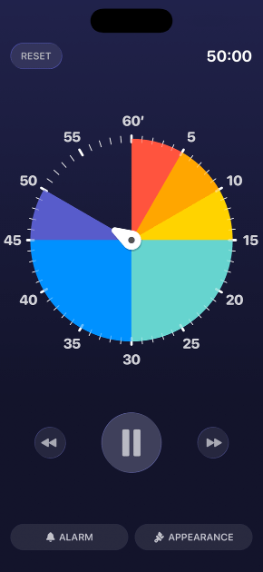

Time’s Up!
Fun visual timers that you (and your kids) will actually want to use.
Great for kids: Colors, photos, and animations keep them engaged.
Great for focus: Track your time with a simple, floating timer.
Great for groups: put a timer up on your TV for exercise, classrooms, or family activities.

Beautiful, Visual Timers
Choose from 7 fun styles including Reveal, Pixelate, Puzzle, and Classic.
Customize with your own photos — perfect for little kids who love seeing photos of themselves!
Enable Guided Access to kid-proof the app and disable app switching.
Notifications, widgets, and Live Activities help you monitor your timer.
Put your timers on the big screen with AirPlay or Apple TV.
Pop out your timer into an always-visible floating window on Mac.
Syncs across all your devices.
Schedule and automate timers with Shortcuts.

Time’s Up! is a free download for iPhone, iPad, Mac, and Apple TV.
Looking for Volume Purchase Program (VPP) pricing? Download Time’s Up! VPP for education customers.